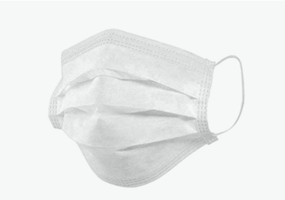
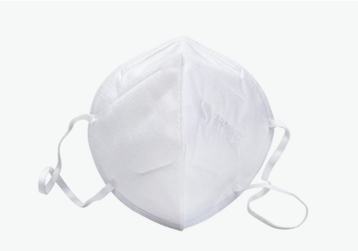
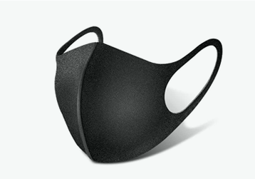

Минимальный заказ одна упаковка
Маска медицинская трёх слойная
Упаковка 50шт. Одноразовая

Цена
49 ₽ шт.
49 ₽ шт.
В наличии
Профессиональные медицинские маски [ KN95 ]
Используютсяв больницах Китая Защита на 12 часов

Цена
590 ₽ шт.
590 ₽ шт.
В наличии
Чёрные
маски из неопрена
Семейная -в плане комфорта идеальна Многоразовая

Цена
490 ₽ шт.
490 ₽ шт.
В наличии